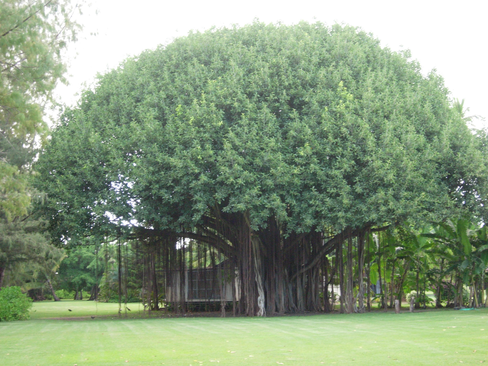
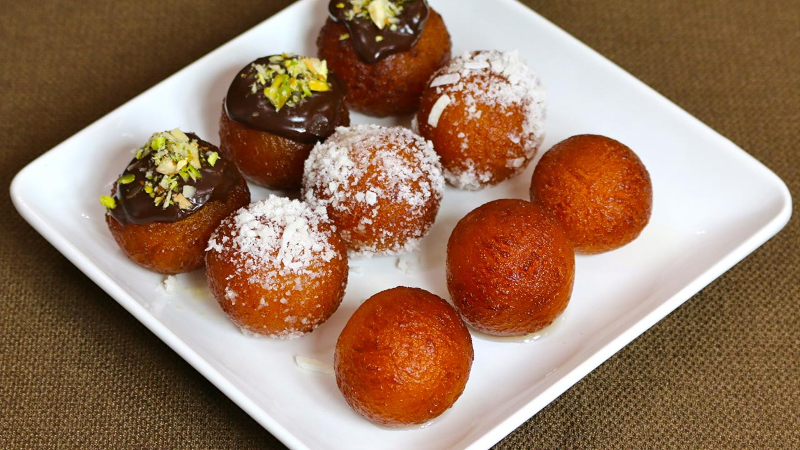

Индия
Краткая информация
-
Место: 7 (ТОП-10)
-
Площадь: 3 287 263 км²
-
Население: 1 414 843 757 чел. (2022 г.)
-
Столица: Нью-Дели
-
Язык: Хинди, английский
-
Валюта: Индийская рупия, ₹ (INR)
-
Крупнейшие города: Мумбаи, Дели, Калькутта, Бангалор, Ченнаи
Георафическое положение и границы
-
Индия на карте
-

Индия
Территория– 3,29 млн кв. км. Индия расположена на юге Азии. На западе и северо-западе граничит с Пакистаном; на севере – с КНР, Непалом и Бутаном; на востоке – с Мьянмой и Бангладеш. На юге Полкский пролив и Манарский залив отделяют ее от Шри-Ланки, к юго-западу расположена Мальдивская Республика. По проливу Грейт-Чэннел между островами Большой Никобар и Суматра проходит морская граница между Индией и Индонезией.
Часовой пояс
В Индии 1 часовой пояс, поэтому во всех городах страны одинаковое время.
Текущий часовой пояс: UTC+5:30 IST Разница во времени с Москвой: MSK+2:30 В Индии на 2:30 часа больше, чем в Москве В 2022 году нет перевода часов.
-

Часовой пояс Индии
Климат
Климатические зоны Индии
Разместившись на трех миллионах квадратных километрах полуострова Индостан, Индия обладает внушительной территорией. Было бы весьма странно, если бы погода здесь отличалась скучной ординарностью.
Бенгальский залив, Полкский пролив, Индийский океан и Аравийское море – все это природное богатство влияет не только на развитие туриндустрии, но и на формирование разного, иногда доходящего до экстремального, климата.
-

Бенгальский зали
-

Индийский океан
-
Аравийское море
Ландшафт Индии способствует погодному разнообразию: жаркое дыхание пустыни, Гималайские горные перепады температур, влажные долины рек Инд и Ганг.
Именно отдаленность от океанских просторов и ландшафт, вместе с высотой над уровнем моря, являются превалирующими в определении климата в каждом конкретном регионе Индии.
Территориально можно выделить такие основные климатически районы:
- Субэкваториальный пояс – в нем лежит большая часть Индии. Здесь господствуют тропические муссоны начиная с конца мая, постепенно продвигаясь до Гималаев. В начале июля уже по всей стране фиксируется максимальное количество осадков. Период мусонных дождей длится до ноября.
- Гималаи – здесь горный высотный климат (зимой минусовые температуры в высокогорье, летом – максимум +30°C)
- Индо-Гангская равнина – умеренный с континентальными чертами климат, господствующий на севере страны, предполагает жаркое лето и холодную зиму
- Тропический влажный - острова
- Тропический сухой - штаты Раджастан, Гуджарат, Харьяна, юг Пенджаба
- Субтропический муссонный– Северная Индия
Сезоны года:
Ноябрь-февраль – солнечно, но прохладно, осадков мало
Март-июнь – жаркая погода, осадков нет
Июль-сентябрь – жарко, но преобладают муссоны, поэтому очень высока влажность
Октябрь-декабрь – постмуссон
В целом же, в Индии выделяют шесть сезонов – три основные, плюс ранняя весна и два сезона дождей.
Туристические сезоны Индии
Среди трех основных сезонов года наиболее комфортным для туристов, непривыкшим к постоянной «сауне» на улицах города или проливным дождям, - это период октябрь-март. Этот период хорошо подходит для путешествия по Центральной, Северной и отчасти по Югу Индии.
Лучшее время, чтобы взобраться в горы – это июнь-август. В это время Гималаи наиболее радушно встречают туристов.
Температура воздуха держится в среднем на отметке около +28..+32°C, температура воды в Индийском океане – около +25°C.
Период первой половины года отлично можно провести на юге Индии, а также в это время можно посещать пустыни Раджастана.
Самым уникальным по сочетанию разных видов отдыха месяцем является декабрь, ведь в это время в одном регионе стартует горнолыжный сезон, а в другом – в разгаре пляжный!
Природа
Природные зоны Индии представлены лесами, саваннами и пустынями.
Лесная зона
Лесная зона в Индии – это преимущественно тропические и горные леса. Тропический лес характеризуется высокой влажностью воздуха – это обеспечивает бурный рост растительности. Флора здесь представлены следующими породами: сандаловое дерево, саловое дерево, джатовое дерево, тик, миробалан, бассия, акация.
-

Тропические леса Индии
В тенистых ущельях растет большое количество бананов, апельсинов и лимонов. Индия богата различными видами пальм – здесь их произрастает около 20 видов. Чаще всего встречаются кокосовые и финиковые пальмы.
Лес умеренного пояса представлен каштанами и дубами, длиннохвойными соснами. В предгорьях Гималаев растут кедры, ели и пихты. Горная растительность – это различные кустарники, редко встречаются березы и сосны. На северных склонах Гималаев лесов нет совсем.
-

Горный лес Гималаев
-
Гималаи
Смола длиннохвойной сосны используется индусами в аюрведической медицине и в быту.
Большие лесные территории вырублены под плантации чая и кофе. Знаменитым деревом Индии является баньян – дерево-лес. От главного ствола баньяна отрастают воздушные корни, которые достигают земли и укореняются там. Таким образом, одно дерево может разрастись на несколько десятков метров в ширину. Старейший баньян Индии растет уже более 3000 лет.
В лесах проживают гималайские медведи, снежный барс, леопард, тибетская рысь. В северо-западных регионах проживают редкие виды – лори, лангоны, свиные барсуки, гиббоны.
Саванны
Это большие территории, полностью покрытые различными травами, и изредка встречающимися островками деревьев. Характерной особенностью саванны является чередование засухи и сезона дождей. Это обусловлено сменой влажной экваториальной и сухой тропической воздушных масс. Почва здесь достаточно плодородная, поэтому в дождливый сезон здесь начинается бурный рост разнообразных трав. В этот период здесь много и животных, которым достаточно еды и питья.
В засушливый период наблюдается иная картина. Все травы высыхают или погибают от животных, которые мигрируют в поисках воды. В засуху очень часто случаются пожары, которые распространяются на большие территории.
Животный мир индийской саванны представлен оленями, сайгаками, тушканчиками. Главное животное Индии – это слон. Слоны проживают как в саваннах, так и в лесных зонах.
Пустыни
В Индии имеется две песчаные пустыни – Тар и Тхал. Пустыня Тар располагается у границы Индии с Пакистаном. Ее длина составляет 850 км., а ширина – 485 км. Это равнинная территория, образованная еще в палеозойскую эпоху.
Некоторые ученые считают, что пустыня Тар образована человеком. Эта гипотеза утверждает, что пустыня сформировалась на месте выпаса скота около 7000 лет назад. Если бы этого не было, на месте сегодняшней пустыни раскинулась бы степь.
-
Пустыня Тар
-
Пустыня Тар
Пустыня Тхал занимает небольшой участок Индии на побережье реки Инд. Большая ее часть расположена в Пакистане. Климат обеих пустынь жаркий, субтропический. Растительность здесь скудная, представлена колючими кустарниками. Животные пустыни – верблюды и тушканчики.
Реки и озёра
Индия богата крупными и мелкими реками. Внутренние воды страны имеют весомое значение для всего континента. Самой известной рекой является река Инд, от которой происходит название государства, но основная часть этой реки сегодня находится за пределами Индии, а именно в Пакистане. Это произошло по причине разделения Индии, которая являлась британской колонией долгое время.
Реки Индии различаются по характеру своего питания. Выделяют следующие типы питания рек в стране:
- Гималайские – реки практически круглый год остаются полноводными;
- Смешанные – реки питаются за счет осадков (снега, дождя, льда);
- Деканские – пополняют свои воды с помощью муссонов и имеют свойство резко менять уровень воды. Для них характерны наводнения, начиная с июня и заканчивая в октябре.
Не менее важными и крупными реками являются Ганг, Брахмапутра, а также большое количество их притоков. Начинают свое существование реки в вершинах Гималаев и обе несут воды к Бенгальскому заливу. Благодаря водам этих рек держится сельское хозяйство страны. Около 60 % земель в Индии искусственно орошаются по причине жаркого климата. Основная часть рек питается только за счет дождей. В самые засушливые времена уровень вод в реках начинает падать, а в сезон дождей начинаются паводки. Оба фактора негативно сказываются на ведении сельского хозяйства.
Что касается озер, то в Индии их очень мало. Одного ледникового питания для озер недостаточно, чтобы поддерживать уровень воды. В Индии существуют озера-старицы, которые основываются в бассейнах больших рек, а также ледниково-тектонические озера в горных массивах Гималаев. Самым большим озером можно считать Самбхар, которое служит для выпаривания соли.
Крупные реки Индии
-

Ганг
-

Брахмапутра
-

Годавари
-

Кришна
-

Инд
-

Мандови
-

Зуари
-

Сал
Крупные озера Индии
- Вембанад
-

Вембанад
- Перьяр
-

Перьяр
- Канкария
-

Канкария
- Хусейн Сагар
-

Хусейн Сагар
- Самбхар
-

Самбхар
Известно, как самое длинное озеро в стране. Находится в штате Керала. Озеро словно разделено на несколько кусков с помощью дамбы Тханнеермукком. Ее построили, чтобы избежать паводков в низших частях г. Куттанада. Площадь, занимаемая озером, насчитывает больше 2000 кв. км, длина 96 км, ширина 14 км. К озеру примыкают маленькие островки, а также полуострова.
Озеро было создано как водоем искусственным путем. Окружающие территории являются заповедником, который получил название в честь озера. Заповедник Перьяр -крупнейший в Южной Индии. Озеро было создано, чтобы утолять жажду диких животных.
Наибольшее озеро в Ахмадабаде, которое создали еще в 1451 г. Находится оно в районе Манинагар, на юго-востоке города. Имеет круглую форму. В периметре озеро составляет 2,3 км. Озеро Канкария приспособлено для отдыхающих, что привлекает внимание местных и туристов.
Создано искусственным образом в городе Хайдарабад, который расположился в штате Андра-Прадеш. Озеро также довольно древнее, ведь создано в 1562 г. Тогда площадь озера насчитывала 5,7 кв. км. В середине озера построено огромное изваяние Будды высотой 18 м. Хусейн Сагар объединяет между собой города Секундерабад и Хайдарабад.
На Северо-западе Индии основалось самое большое соляное озеро страны Самбхар. Озеро представляет собой широкую болотистую местность. Оно мелководно, в засушливое время глубина достигает всего 60 см, а после периода дождей его глубина увеличивается до 3 м. По площади Самбхар занимает 190-230 кв. км., все зависит от погодных условий. В бассейне озера сооружена песчано-каменная дамба. Здесь пролегает железная дорога, которая является связующим звеном между городом и местами добычи соли. Солеварни выпускают около 196 тыс. тонн соли ежегодно.
Горы Индии
-
Гималаи
-

Виндхья
-
Аравали
-

Сатпура
-

Ассамские горы
-

Восточные Гаты
-

Тропические леса в национальном парке Моллем (Западные Гаты)
Некоторые вулканы Индии
Приезжая на край земли, путешественники всегда опасаются стихийных бедствий. Чего не стоит бояться в Индии, так это извержения вулкана. Здесь может случиться наводнение, цунами, землетрясение, но только не выход на поверхность горящей лавы. В стране всего семь вулканов, и только один из них действующий, но он находится на отдаленном острове Андаманского архипелага.
Остров Баррен. У этого вулкана нет имени, впрочем, как у всех остальных в Индии. Название острова Баррен в Андаманском море переводится как «бесплодный» – и всё благодаря вулкану. Это единственный действующий кратер не только в Индии, но и во всей Южной Азии. Его периодические извержения выжигают флору и фауну острова, делая его действительно бесплодным. Лишь вездесущие грызуны, несколько стай птиц и небольшая популяция диких коз еще бродят среди чудом уцелевших участков леса. Еще несколько лет назад здесь жили люди, но извержение 2017 года заставило и этих смельчаков покинуть остров навсегда. Тем не менее, на Баррен приезжают немногочисленные туристические группы. Его посещение возможно только в дневное время и исключительно в сопровождении гида. Здесь одно из лучших в мире мест для дайвинга с кристально чистой видимостью, интересными базальтовыми образованиями, изящными драпировками лавовых потоков и быстро растущими коралловыми садами.
-

Остров Баррен
Остров Баратанг. Он также относится к Андаманскому архипелагу и имеет вулкан, но весьма своеобразный – грязевый. Хотя с точки зрения геологии это действительно вулкан, но выглядит он как небольшая кучка грязи, из которой периодически вытекают новые потоки горячей жижи и выходит зловонный газ. Таких вулканов всего 700 на всей планете, и один из них – на Баратанге. Он образовался совсем недавно, в 2005 году, вероятно, после тектонических сдвигов, вызванных цунами в 2004. Считается местной достопримечательностью, извергается время от времени, и не факт, что, запланировав его посещение, вы застанете извержение. Скорее всего, взору предстанет подсохшая масса серой грязи, совсем не впечатляющая.
-

Остров Баратанг
Декан Трэпс. Есть ли в Индии вулканы на материке или все они исключительно островные? Есть, и одна из крупнейших вулканических провинций в мире – «Деканские ловушки» – находится в штате Махараштра. Эти образования получили свое название благодаря вулканическим скалам в виде лестниц, что свидетельствует о продолжительном и неторопливом извержении. Сегодня плато Декан – это удивительно упорная растительность и реки, скользящие меж древних скал.
-

Декан Трэпс
Холм Дхоси. Этот потухший вулкан расположен на границе индийских штатов Харьяна и Раджастхан. Он одиноко стоит на северо-западной оконечности горного хребта Аравалли. Считается, что Дхоси извергался последний раз около 700 млн лет назад – так давно, что все уже забыли бы, что это вулкан, если бы не его физические особенности. Здесь сохранился его кратер, и застывшие потоки лавы, придающие холму прекрасный конический вид. К кратеру возят экскурсии, для этого специально построена витая лестница вокруг горы.
-
Холм Дхоси
Водопад Дудхсагар (Dudhsagar falls)
Водопад Дудхсагар — самый впечатляющий водопад на Гоа и второй по высоте во всей Индии. Находится восточной границе с Каранатакой, его высота составляет 603 м.
-

Водопад Дудхсагар
Растительный мир Индии
Индия является одной из богатейших стран по разнообразию флоры на Земле. На ее территории произрастает 19 тыс покрытосеменных растений, что составляет 6-7% от общемировой численности. Индия стала родиной для 50 тыс видов флоры, в состав которых входят виды, не растущие в других местах планеты. Население используют культуры как основу для создания лекарственных средств. Занимаются они этим делом с древних времён. На территориях Гималаев, Ассам, равнинах Инда и Ганга, Деканского плоскогорья, Малабар и Андаманских островов насчитывается не менее 3000 видов индийской флоры.
Растительность располагается, начинается тропическими нивами Андаманских островов, завершается хвойными лесами Гималаев. В середине этих дальних пунктов значатся лиственные насаждения. В местности с преобладанием холмов находятся: сосны, ели, кипарисы.
Растительность страны делится на две группы: тропические, горные и умеренные.
Влажность воздуха знойных лесов положительно влияет на развитие видов. В местности растут: джатовое дерево, тик. Жители применяют сал при строительстве домов. На нём обитает лаковый червь, источник получения воска для нужд радиотехники.
-

Исполинское дерево
-
Тик
В пустыне Тар преобладают акации. Они становятся источником создания предметов из дерева. Из настойки получают красители для придания оранжевого цвета облачению буддийских монахов.
-
Акация
Разнообразие пальм радует, насчитывается свыше 19 видов, лидирует среди них кокосовая.
В южных регионах растёт нипа кустистая. В ущельях с влажным климатом встречаются апельсиновые и лимонные деревья.
Равнинная местность Индостана богата травами и бурьяном. Коренные жители отдают предпочтение занятиям по земледелию и скотоводству.
В умеренной полосе предгорных зон Гималаев растут каштаны и дубы. В западном участке встречаются сосны с длинной хвоей. Из них получают смолу, применяют в домашнем хозяйстве и медицине.
В горной местности Нилгири занимаются выращиванием сортов чая и кофе.
Кашмир становится домом для гималайских кедров. На возвышенных территориях любуются берёзами.
Взор посетителей удивляет дерево-великан батангор с высотой 36 метров и баньян (фикус бенгальский) с воздушными корнями.
-
Баньян
Животный мир
Природа страны оказывается важным местом обитания различных хищных и травоядных животных. Прекрасное климатическое положение и густые леса становятся главным условием выживания видов. Обитают в Индии около 89 000 различных животных, 2005 птиц, около 450 типов млекопитающих, 29 000 насекомых, рыбы и рептилии.
Слоны в Индии считаются символом государства. Население относится к ним уважительно. В древние времена они олицетворяли силу и мощь в период сражений с врагами.
-
Индийский слон
-
Индийские слоны
В пустынных районах встречаются верблюды. Они помогают людям перевозить разные грузы, обходятся без воды полмесяца.
Корову в этой стране признают священной. Жители уверенны, что они сохраняют благополучие всей планеты. Обижать корову полагают недостойным поступком. В хозяйстве широко применяют навоз, молоко принимают с признательностью.
В Гималаях водятся снежные барсы, численность которых составляет около 200-600 особей.
Река Ганг обозначается местом обитания крокодила Гавиал. На людей первым не нападает, если не спровоцировать. Он находится почти все время в воде, выходя на сушу только для принятия солнечных ван и кладки яиц. Наблюдается и пресноводный дельфин.
Бенгальский тигр представляется национальным достоянием страны. В природе они встречаются в исключительных случаях, находятся в зоопарках, в частных парках. В лесах не выживают из-за оттенка шерсти. Защиту и охрану им обеспечивают власти.
-

Бенгальский тигр
-
Крокодил Гавиал
Количество индийских львов с каждым годом уменьшается. Насчитывается около 500 особей. По сравнению с африканскими родственниками, азиатские львы не могут похвастаться крупным телом и пышной шевелюрой.
Мангуст подвижный хищник с величиной хорька. Побеждает королевскую кобру и других змей. Природа наградила противоядием от укусов. Изворотлив и хватка молниеносная.
-
Индийский лев
-
Мангуст
В храме Карни Мата у людей к крысам почётное отношение. В соборе нашли дом тысяча особей. Посетители храма наливают им молоко и кормят разными лакомствами. Они считают их святыми существами.
Красные панды живут в восточной части Гималаев. Их причисляют к семейству енотовых, не видится явного родства с пандами. Связывают их в единое отличие, у них большой палец оказывается отростком от кости запястья.
Бык Гаур относят к травоядным животным. Человек приучил для работ в хозяйстве и служит источником мяса.
В Индии обитает азиатский шершень. Укус насекомого может привести к летальному исходу у человека. Причиной станет аллергия на яд, он способен разрушать ткани организма.
-

Бык Гаур
-

Красная панда
Природные ресурсы
Почвы
На северо-западе плато Дин и на полуострове Катиавар преобладают регуры, желтые земли к югу и северо-востоку от плато, кислые почвы, низменности Западных Гатов, низины Западных Гатов, равнины на севере и в долине Ганга и в дельтах рек полуострова Индостан – поймы рек. В середине плато Дин (саванна) возраст почв составляет всего 3-4 месяца. Достаточно влажная, в остальное время сохнет, трескается. В нижних склонах Гималаев каменистые глинистые блестящие почвы и кислые почвы, на высоте 2000-3500 м, горные руды, вверху – каменистый известняк. Поля, возделываемые в горах, имеют высоту до 4000 м.
Полезные ископаемые
Индия обладает существенными запасами природных богатств. Между штатами Орисса и Бихар добывают железные руды отменного качества. Залежи страны изобилуют марганцевыми породами.
-

Железнорудные бассейны Индии
Западная Бенгалия располагает припасами каменного угля среднего пробы. Резервы в государстве равняются 22 млрд т. В северных территориях создаются условия для роста тяжёлой промышленности.
В южных регионах добывают хромиты, бокситы, золото и алмазы. В центральных районах имеются залежи чёрных металлов.
Монацитовый песок содержит в составе радиоактивный торий. Он становится основой энергии.
Восток Индии значится нефтедобывающим регионом. С недр земли ежегодно скачивают 41 млн т. Петролеума.
Богатством страны становятся аллювиальные почвы Ганга. Они обладают внушительной плодородностью. Земледельцы собирают обильный урожай 2 раза в год. Но, земля содержит соли, истощается, возникает эрозия грунта.
Отдых
Индия – удивительно многогранная и самобытная страна, каждый курорт которой хранит в себе отпечаток ее древней истории и культуры. Здесь находятся известные аюрведические центры и клиники, изумительные по красоте пляжи, впечатляющие архитектурные памятники и вызывающие благоговение священные места. Вот почему, даже выбрав один конкретный регион для путешествия, вам не удастся – да и не захочется – ограничиться каким-то одним видом отдыха.
Итак, где же находятся лучшие места для отдыха в Индии и чем они так интересны?
Гоа
О различиях Северного и Южного Гоа написано немало, как и о главном их сходстве – прекрасных пляжах, будто сошедших с рекламной картинки. Пожалуй, именно здесь находятся самые известные и популярные курорты Индии у моря: Маджорда, Палолем, Кавелоссим, Кансалиум, Колва, Калангут, Вагатор, Мандрем, Арамболь.
Южный Гоа традиционно позиционируется как место более спокойного, респектабельного и роскошного отдыха, а Северный – как более «тусовочное», молодежное и демократичное направление. Развлечений и условий для комфортного путешествия больше на курортах Южного Гоа, что, впрочем, совсем не означает, что они отсутствуют в Гоа Северном. Да и пляжи одинаково хороши в обоих регионах этого штата.
На территории Гоа находится самый большой индийский водопад – Дудхсагар, и самый маленький заповедник – Бандла. Из других достопримечательностей стоит посмотреть старинные храмы и крепости, плантации специй и колоритные местные рынки. Есть в Гоа и одно удивительное место, где, независимо от времени года, можно часто слышать русскую речь. Называется оно Морджим. На этом курорте много выходцев из СНГ, а потому есть русские гест-хаусы, рестораны и другие заведения.
Подходит для пляжного, экскурсионного отдыха и туров с детьми.
-
Гоа
-
Пляжи Северного Гоа
Керала
Гоа – всегда на слуху, но есть еще более прекрасный курорт Индии у моря с пальмами и белоснежными пляжами. Это Керала – «один из десяти райских уголков мира» (по мнению National Geographic) и «личная страна бога» (по словам самих индийцев). Список основных курортов штата выглядит следующим образом: Тривандрам, Варкала, Ковалам.
Все данные Керале названия отражают райскую красоту этих чудесных мест: заповедников и парков, пляжей, гор и утесов, лагун и озер. Штат считается самым спокойным и благоустроенным в Индии и обладает на редкость развитой туристической инфраструктурой. Здесь есть буквально все: от отелей класса люкс и до ресторанов, магазинов и других заведений. Единственный не очень приятный нюанс касается моря – на некоторых участках оно бывает неспокойным и купаться там небезопасно.
Практически каждый местный курорт – своего рода аюрведический центр, где можно опробовать традиционные индийские практики в лечении различных недугов. Для этого можно отправиться, например, в Паллакад или Ковалам.
В Керале правит коммунистическая партия, а потому агитационные плакаты и другая похожая атрибутика встречаются тут часто. Обязательно стоит посетить легендарный храм Падманабхасвами в Тривандраме, древний город Мадурай, форт Кочи, а также побывать в многочисленных природных заповедниках и национальных парках с нетронутой, дикой природой.
Подходит для пляжного и экскурсионного отдыха, эко- и фототуризма, лечебно-оздоровительных (аюрведических) туров, путешествия с детьми.
-
Керала
-
Керала
Гуджарат
Где еще возможен пляжный отдых в Индии, кроме Гоа и Кералы? Конечно, в штате Гуджарат – здесь самая длинная на территории Индии береговая линия (1600 км). Правда, стоит оговориться, что места для купания здесь нужно выбирать тщательно из-за не всегда спокойного моря и мутной воды. К числу самых популярных пляжей относятся Гопнат, Дварка, Ахмедпур Мандви, Диу, Сомнат, Чорвад, Мандви.
Гуджарат – самый «вегетарианский» штат в Индии. Например, именно на его территории находится Палитана – город, в котором полностью запрещены блюда из мяса, да и рыбу и яйца в продаже найти невозможно. Впрочем, и в целом в Индии мало где можно увидеть на столе говядину – кухня Гуджарата не станет исключением. Вегетарианские заведения здесь на каждом углу, а вот меню с мясными блюдами придется поискать.
Гуджарат сохранил естественные области обитания азиатского льва, четырехрогой антилопы и некоторых других редких животных. Поэтому туристы в первую очередь стремятся побывать в заповедниках и национальных парках на территории штата: на озере Налсовар и острове Фламинго, в парках Ранн-оф-Катч и Сасан-Гир, морском национальном парке.
Исключительной местной достопримечательностью признаны одни из самых больших в мире раскопок динозавров (в Баласиноре и Кутче). Ну и конечно, нельзя обойти вниманием впечатляющие древние храмы и крепости.
Подходит для экскурсионного и пляжного отдыха, фото- и экотуризма, гастрономического тура.
-
Гуджарат
-

Храм Сомнатх в Гуджарате
Национальная кухня
Особенности кухни Индии Из-за религиозных ограничений большинство индусов не едят говядину и свинину.
Индия – это родина карри. В национальной кухне этой страны присутствует целая группа различных мясных и овощных блюд, приготовленных с использованием всемирно известного соуса карри, в котором используется смесь следующих специй: куркума, кориандр, красный перец, тмин, чеснок, тамаринд и другие приправы. Индусы верят, что специи способны не только изменить вкус блюда, но и настроение человека, их употребляющего.
Как и в других странах Востока, в Индии по-особому относятся к специям, добавляя их повсеместно. Наибольшей популярностью пользуется уже упомянутая смесь пряностей «карри», а также шафран, гвоздика, имбирь, кумин, мускатный орех, порошок манго, различные перцы.
Жители севера предпочитают пить чай с различными добавками: сливками или молоком, пряностями, лимоном. Жители юга больше любят кофе. Также индусы пьют популярный напиток ласси, похожий на молочный коктейль – он готовится на основе йогурта, фруктов с добавлением соли и других пряностей. Распространены и фруктовые соки, а также кокосовое молоко. Индусы практически не употребляют алкогольные напитки.
Кухни северной и южной части страны во многом различаются. Северяне готовят множество мясных блюд, щедро сдобренных пряностями и маслом. Южане предпочитают овощные блюда, причем довольно острые. Наряду с отличиями, если и общая черта, объединяющая две части страны: большое количество блюд, приготовленных из бобовых.
Западная часть страны отличается тем, что здесь готовят множество рыбных блюд. Индусы любят мариновать морепродукты в различных соусах перед готовкой, при этом некоторые из них имеют довольно специфический запах.
Обилие жирных блюд – настоящее испытание для желудка. Чтобы улучшить пищеварение, рекомендуется пожевать пан (рулетики из листьев бетеля с ореховой начинкой).
Традиционные индийские блюда
Если вам предстоит поездка в Индию, обязательно насладитесь особенностями местной кухни. Предлагаем вам попробовать эти блюда:
- Дхал – густой крем-суп из нута или фасоли на кокосовом молоке с добавлением карри и овощей.
- Роган джош – ягненок в соусе карри.
-
Дхал
-

Роган джош
- Бирьяни – основное блюдо, состоящее из мяса, риса и смеси овощей, заправленное пряным апельсиновым соусом.
- Дахи маач – рыбное блюдо с добавлением карри, заправленное йогуртом.
-
Бирьяни
-

Дахи маач
- Тандури – нежный цыпленок, особым образом замаринованный и запеченный в индийской печи.
- Майлаи – креветки в соусе карри на основе кокосового молока.
-
Тандури
-
Майлаи
- Пападам – мучная лепешка с чечевицей.
- Чапати – национальный индийский тонкий хлеб.
-
Пападам
-
Чапати
Сладкоежки найдут в Индии множество блюд на свой вкус, а особой известностью пользуются бенгальские сладости. Рекомендуем взять на десерт:
- Кульфи – мороженое с добавлением фисташек и специй.
- Расгулла – круглые пирожные из творога в розовом сиропе.
-
Кульфи
-
Расгулла
- Гулаб ямунс – шарики из теста, залитые йогуртом.
- Фирни – сладкая рисовая запеканка с орехами.
-

Гулаб ямунс
-
Фирни
- https://time-in.ru/time/india
- https://pogoda33.com/Климат-Индии
- https://natworld.info/nauki-o-prirode/priroda-zhivotnye-i-rasteniya-indii-opisanie-i-foto
- https://www.okaytravel.ru/interesnoe-o-stranah/priroda-indii/
- https://obrazovaka.ru/geografiya/prirodnye-zony-indii.html
- https://сезоны-года.рф/воды%20Индии.html
- https://womanadvice.ru/vulkany-v-indii
- https://turvopros.com/kurorty-indii/
- https://krugozorro.com/kuxnya/nacionalnaya-kuxnya-indii-osobennosti-i-tradicii.html